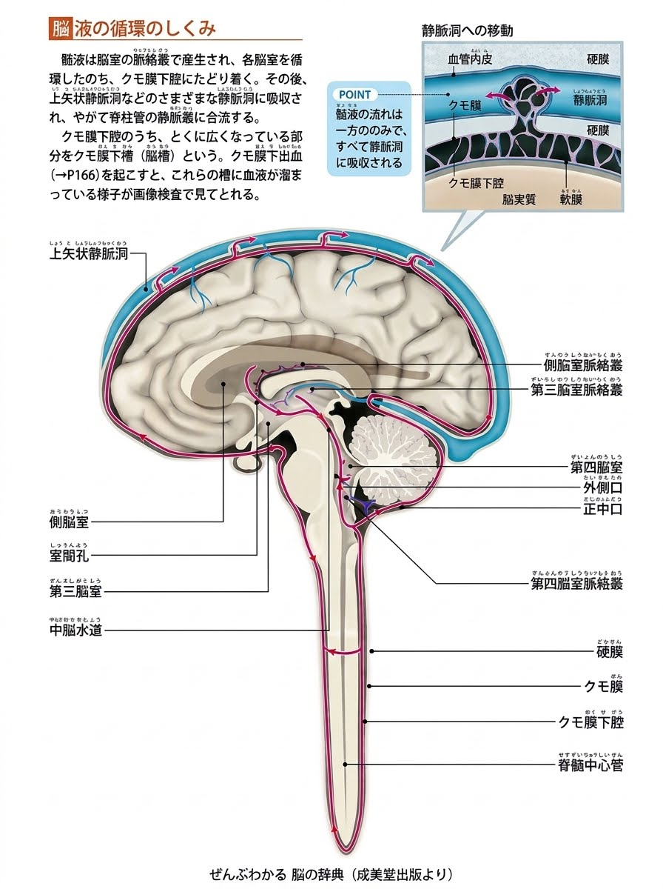

脳・脊髄を保護する
脳や脊髄の周囲を満たし、浮力によって組織を支え、衝撃を和らげる役割があります。
脳脊髄液調整法は院長の宮野博隆が確立した治療理論です。 この理論は２０００年アメリカで開催された国際学会において研究者大賞を受賞しております。

まずは、身体の中で脳脊髄液がどのような役割を担っているのかを知ることから始めます。
脳脊髄液（Cerebrospinal Fluid：CSF）は、脳室でつくられ、脳や脊髄の周囲を満たしている透明な液体です。
脳や脊髄を浮かせるように支え、外部からの衝撃を和らげる働きのほか、脳や神経の周囲の環境を保つことにも関わっています。
脳や脊髄の周囲を満たし、浮力によって組織を支え、衝撃を和らげる役割があります。
脳や神経の周囲の化学的な環境を保ち、物質の移動や老廃物の排出に関わる仕組みの一部を担います。
脳脊髄液は、つくられ、脳室や脳・脊髄の周囲を循環し、体内へ吸収される動的な仕組みの中にあります。
脳は頭蓋骨に包まれ、表面は硬膜（こうまく）で覆われており、その内腔は脳脊髄液（CSF：cerebrospinal fluid）と呼ばれる無色透明の液体で満たされて保護されています。
脳脊髄液は脳の内側にある脳室（脳の中の空洞）の脈絡叢（みゃくらくそう）で血液がろ過されて作られ循環し、一部は頭蓋内のクモ膜顆粒で吸収され静脈（上矢状静脈洞）へ戻ります。
大部分は神経に沿って神経を覆う膜の中（神経周囲腔）を通り全身の臓器・組織まで流れ、静脈およびリンパ管に吸収され心臓へ帰り、再び動脈血として脳へ運ばれます。
その後、複数の経路を通じて静脈系やリンパ系などへ移行・吸収されます。
この循環は、脳や脊髄を取り巻く環境を保つための生理的な仕組みです。流れの状態を外から見た印象だけで判断することはできません。

CSFプラクティス（脳脊髄液調整法）は、宮野博隆氏がS.O.T.（仙骨後頭骨テクニック）の考え方をもとに、研究と臨床経験を重ねて発展・体系化した手技体系です。
宮野氏は2000年に国際仙骨後頭骨学会（SORSI）で「Chiropractic Researcher of the Year（研究者大賞）」を受賞し、その後、S.O.T.の原理を発展させてCSFプラクティスを開発しました。
Momdoでは、お一人おひとりの身体の状態や日々のコンディションを確認し、無理のない範囲で施術を行います。健康管理や定期的な身体のメンテナンスを目的とする場合も、まずは現在の状態やご希望を伺います。
参考：パーフェクトクラニオロジー協会「宮野博隆 ごあいさつ・プロフィール」
筋肉や関節の動きだけでなく、日々の生活や身体全体の状態にも目を向けます。
姿勢や動作、関節の動き、筋肉の緊張などを確認します。
身体の柔軟性や違和感、疲労感、日常生活での変化などを伺います。
相談内容に応じて、気になる場所だけでなく関連する部位にも目を向けます。
強い刺激を加えることを目的とせず、お身体の状態を確認しながら、無理のない範囲で行います。
CSFプラクティスでは、ソフトブロック®や手技を用い、頭部や身体にやさしく働きかけます。施術前にお話を伺い、身体の状態やご希望を確認したうえで、刺激量や方法を調整します。
すべての方に同じ方法を行うのではなく、その日の体調や不安の有無も確認しながら進めます。痛みや不快感がある場合は、すぐにお知らせください。
Momdoでは、組織の柔軟性や身体のコンディションを整えることを目指す「ナチュラル再生法」という考え方でご案内しています。
脳脊髄液の産生量を増やしたり、循環・吸収を促進したりする効果が医学的に確立しているわけではありません。CSFに着目したMomdo独自の考え方に基づく手技としてご案内しています。
強い刺激を目的とした施術ではありません。お身体の状態やご希望を確認し、刺激量や方法を調整します。不快感や痛みがあればすぐにお知らせください。
病気の診断や治療を目的とするものではありません。頭痛や神経症状などがある場合は、まず医療機関で適切な診察を受けてください。
体調や既往歴、現在の症状によっては施術を控えたり、医療機関への相談を優先したりする場合があります。事前に状態をお知らせください。